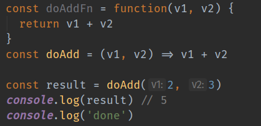
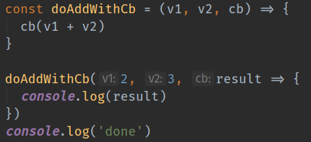
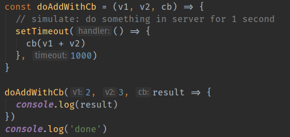
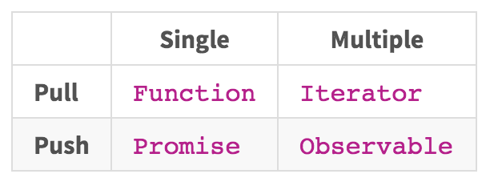

Functional Reactive Programming (101)
Email: kctang@big2.net | Twitter: @kctang
github.com/kctang/frp101
Functional Reactive Programming
- Asynchronous programming style to manage events that happens over a period time
- Manage data flow & transformation , where the program has little control on data's time of arrival
- Observable as a core type
- Operators used to create, transform, filter and combine data
Asynchronous Programming
Async Scenarios
- File read/write [s]
- Make REST API call [s]
- Taking photo using Camera API [s]
- Get GPS coordinates from device [m]
- Get data from Firebase [m]
- Chat applications [m]
[s]ingle value
[m]ulti value
Async Solutions
- Callbacks (Sync/Async)
- Promise
- Observable
Synchronous Execution

Output:
> 5
> done
- Execute according to code sequence
Synchronous Callback

Output:
> 5
> done
- Execute according to code sequence
Asynchronous Callback

Output:
> done
(1 second later...)
> 5
- Simple async code execution
- Modern "goto" statement, aka "callback hell"
Promise

Output:
> done
> 5
- Simple async code execution
- Promise chaining helps to avoid "callback hell"
- Produce a value when .resolve() is called
Observable

Output:
> done
> 5
> really done
- Like Promise, produce value asynchronously
- Produce a value whenever .next() is called
- Done when .complete() is called
Characteristics Of "Types"

- Function, promise returns one value
- Iterator, observable returns multiple values
- Function, iterator runs when called. You pull data. You control time.
- Promise, observable resolve value(s) when available. Data pushed to you. No control over time.
FP: Data Flow & Transformation
const data = [1, 2, 3, 4, 5, 6, 7, 8, 9, 10]
data.map(val => val * 7)
> [ 7, 14, 21, 28, 35, 42, 49, 56, 63, 70 ]
- Objective: Multiply each value by 7, then get the total value for all even numbers
- Start with: Multiply each number by 7
- Result is an array of values multiplied by seven
FP: Data Flow & Transformation
const data = [1, 2, 3, 4, 5, 6, 7, 8, 9, 10]
data.map(val => val * 7)
.filter(val => val % 2 === 0)
> [ 14, 28, 42, 56, 70 ]
- Filter for even numbers
- Result is an array of even numbers
FP: Data Flow & Transformation
const data = [1, 2, 3, 4, 5, 6, 7, 8, 9, 10]
data.map(val => val * 7)
.filter(val => val % 2 === 0)
.reduce((total, current) => total + current, 0)
> 210
- Sum up the values to get the answer
- Uses functional style
- Declarative
- No data mutation
- Function chaining
FRP: FP with data from Observable
// data is 'ready' in an iterator
const data = [1, 2, 3, 4, 5, 6, 7, 8, 9, 10]
// what if data is generate every 500ms?
const data$ = interval(500).pipe(
map(no => no + 1),
take(10)
)
data$.subscribe(val => console.log(val))
- What if data is not always ready to be processed?
- Can we still map, filter, reduce, etc?
- Hint: If you can, you are doing functional reactive programming.
Operators
const data$ = interval(500).pipe(
map(no => no + 1),
take(5)
)
data$.pipe(
map(val => val * 7),
filter(val => val % 2 === 0),
reduce((total, current) => total + current, 0)
).subscribe(
val => print(`Subscription got val [${val}]`),
e => console.error(e),
() => print('Subscription done')
)
- Operators used to create or manipulate observables
- RxJS uses operator piping to mimic "function chaining"
Stock Quote Demo
- stock ticker generate quotes whenever price change
- ask broker should i buy?
- ask broker should i sell?
- perform buy/sell transaction
- update application state
Described as an observable chain

Focus on business logic

These can take time

Summary
- Functional programming is about data flow and transformation using functions
- FRP is an attempt to apply FP concepts, with little control over when data is available
- Think of... "when data arrives, let it flow through series of functions to be processed" - an observable chain
- FRP is simple, once you are familiar with its concepts